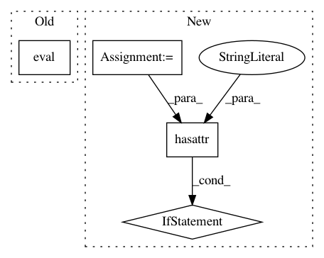

4d857be62bbeabf1ba6374492d13d63a097891ed,keras/backend/tensorflow_backend.py,,eval,#Any#,536
Before Change
{{np_implementation}}
// TODO
return to_dense(x).eval(session=get_session())
@tf_graph_op
def zeros(shape, dtype=None, name=None):
After Change
```
{{np_implementation}}
if hasattr(x, "numpy"):
return x.numpy()
eval_fn = function([], [x])
return eval_fn([])[0]
In pattern: SUPERPATTERN
Frequency: 3
Non-data size: 4
Instances
Project Name: keras-team/keras
Commit Name: 4d857be62bbeabf1ba6374492d13d63a097891ed
Time: 2019-03-05
Author: francois.chollet@gmail.com
File Name: keras/backend/tensorflow_backend.py
Class Name:
Method Name: eval
Project Name: keras-team/keras
Commit Name: 94dbc3042f5a85b399f5ce2859d4e8fbafd235b9
Time: 2017-07-06
Author: me@taehoonlee.com
File Name: tests/keras/backend/backend_test.py
Class Name:
Method Name: check_single_tensor_operation
Project Name: keras-team/keras
Commit Name: 94dbc3042f5a85b399f5ce2859d4e8fbafd235b9
Time: 2017-07-06
Author: me@taehoonlee.com
File Name: tests/keras/backend/backend_test.py
Class Name:
Method Name: check_two_tensor_operation